Travel Guides & City Spotlights
Thoughtful destinations. Slow itineraries. Intentional escapes.
Venice in February: A Slow, Romantic Carnival Escape 🎭
Venice in February feels cinematic and intimate. The canals move quietly beneath soft winter skies, and Carnival season brings artistry and mystery to every piazza. Masks, velvet cloaks, candlelit dinners, and musicians echoing through narrow streets transform the city into something unforgettable.

While summer brings heavy crowds, February offers something slower and more intentional. You can wander freely, linger in cafés, and truly absorb the beauty of the architecture without feeling rushed.
What Is Carnival in Venice?
Venice Carnival dates back to the 12th century and is known for elaborate masks and ornate costumes. Historically, masks allowed Venetians to celebrate freely across social classes. Today, Carnival includes public performances, parades, artistic displays, and elegant masquerade balls.

Why Visit Venice in February?
- 🎭 Immersive cultural experience during Carnival
- 📸 Fewer tourists than peak summer season
- ☕ Cozy cafés and slower mornings
- 🛶 Romantic gondola rides through peaceful canals
- 🌫️ Moody winter atmosphere perfect for photography
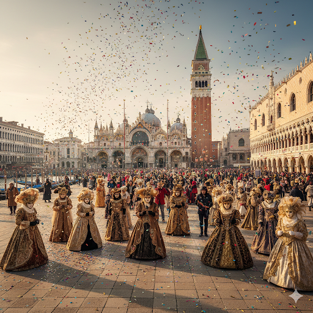
Designed with AI for inspiration.
A 6-Day Romantic Carnival Journey in Venice✨
Day 1: Arrival & Evening Canal Welcome
Settle into your canal-side stay and take a slow evening walk through quiet waterfront paths. Let the soft winter air and glowing street lamps introduce you gently to the city’s rhythm. End the night with candlelit Italian dining at a local trattoria.
Day 2: St. Mark’s Square & Carnival Magic 🎭
Explore iconic landmarks like St. Mark’s Basilica and the Doge’s Palace. Immerse yourself in Carnival celebrations masked parades, street performances, and artisan stalls scattered across historic piazzas. Watch sunset light touch the water before enjoying a classic gondola ride.
Day 3: Murano & Burano Island Colors 🌈
Travel by vaporetto to the glass-blowing island of Murano, then continue to Burano, known for its vibrant pastel homes and delicate lace craftsmanship. Pause for seafood lunch beside the canals and wander slowly through photogenic streets.
Day 4: Hidden Venice & Coffee Rituals ☕
Spend the day exploring quieter neighborhoods like Cannaregio and Dorsoduro. Discover small cafés, artisan shops, and peaceful canal views. Take moments to sit, watch the water move, and experience the city without rushing.
Day 5: Carnival Grand Ball or Night Celebration 🌙
Attend an elegant Carnival ball, classical music performance, or nighttime waterfront stroll. If events are not booked, simply enjoy illuminated canals and the mystical atmosphere that Venice becomes after sunset.
Day 6: Slow Farewell Morning
Begin with cappuccino near the water, pick up handcrafted souvenirs, and take one final reflective walk along the canals before departure — leaving with quiet, lasting memories.
Stay in a Cozy Canal-Side Room 🏠
- Wake up to soft winter light spilling over Venetian rooftops 🌅
- Steps from Carnival festivities 🎭 and masked parades in historic piazzas
- Warm breakfast included each morning 🍳
- Private terrace overlooking the canal 🌊
- Relaxing jacuzzi after exploring Venice’s intimate streets 🛁
Curious about this stay? Feel free to contact us 📩 for more details, or continue exploring the guide below.
Thinking About a Trip Like This?
If this kind of slow European escape speaks to you, I can help you bring it to life in a way that feels easy, personal, and completely your pace.
Ask About This Trip 💌Dublin in March: Culture, Charm & St. Patrick’s Celebration ☘️
Dublin in March feels electric yet intimate. Cobblestone streets hum with live music, historic pubs glow warmly against crisp spring air, and the city comes alive during St. Patrick’s Festival. Visitors can enjoy colorful parades, traditional Irish music, and cultural performances that celebrate Ireland’s heritage in a joyful, community centered atmosphere.
Designed with AI for inspiration.
What Makes March Special in Dublin?
March is home to Ireland’s most famous celebration: St. Patrick’s Festival. The city hosts parades, street entertainment, and cultural performances throughout the week. Alongside the festivities, early spring brings comfortable walking weather, making it a great time to explore historic landmarks, riverside paths, and lively local pubs.
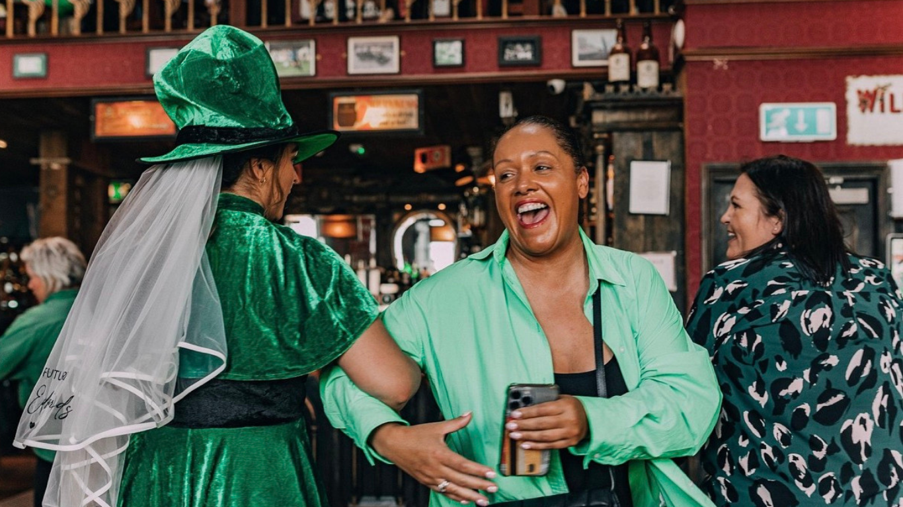
Why Visit Dublin in March?
- ☘️ Experience the iconic St. Patrick’s Day Parade
- 🎶 Live traditional Irish music in historic pubs
- 🏰 Explore Dublin Castle & Trinity College
- 🌦️ Cool but comfortable spring weather
- 🍺 Guinness tastings at the Guinness Storehouse
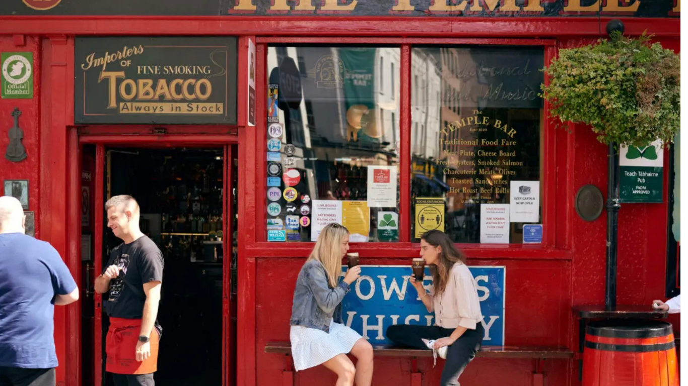
A 5-Day Dublin Itinerary for Two
Day 1: Arrival & Temple Bar Evening
Check into your central Dublin stay and explore Temple Bar’s lively streets. Enjoy traditional Irish cuisine and live music in a cozy pub.
Day 2: Historic Dublin
Visit Trinity College to see the Book of Kells, tour Dublin Castle, and stroll through St. Stephen’s Green before an evening whiskey tasting.
Day 3: St. Patrick’s Festival Experience
Secure a viewing spot for the parade, explore festival markets, and immerse yourself in the celebratory atmosphere throughout the city.
Day 4: Cliffs of Moher Day Trip
Take a guided day tour to the breathtaking Cliffs of Moher and enjoy sweeping Atlantic views.
Day 5: Slow Farewell
Enjoy a relaxed Irish breakfast, pick up handcrafted souvenirs, and take one last walk along the River Liffey before departure.
What to Wear in Dublin in March ☔☘️
March weather can be cool and unpredictable. Light layers and rain-ready pieces are recommended.
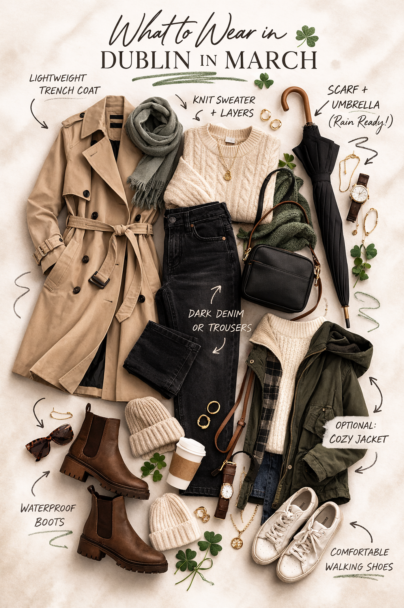
- 🧥 Waterproof coat
- 🧶 Layering sweaters
- 👖 Dark denim or trousers
- 👢 Waterproof boots
- 🧣 Scarves and crossbody bags
Stay in a Stylish 4-Star Dublin Hotel 🏨
- ✨ Modern bedrooms
- 🚉 Transit access
- 🏛️ Cultural landmarks nearby
- 🌳 Green parks nearby
- 🤍 Irish hospitality
Curious about this stay? Feel free to contact us 📩 for more details, or continue exploring the guide below.
Thinking About a Trip Like This?
If this kind of experience feels like your style, I can help you plan something just as meaningful without the stress.
Ask About This Trip 💌Kyoto in April: A City Wrapped in Cherry Blossoms 🌸
Kyoto in April feels like a quiet dream you get to walk through. Soft pink cherry blossoms line rivers, temples, and stone paths, creating a peaceful atmosphere that slows everything down. It’s one of the most iconic spring experiences in the world, beautiful, fleeting, and unforgettable.
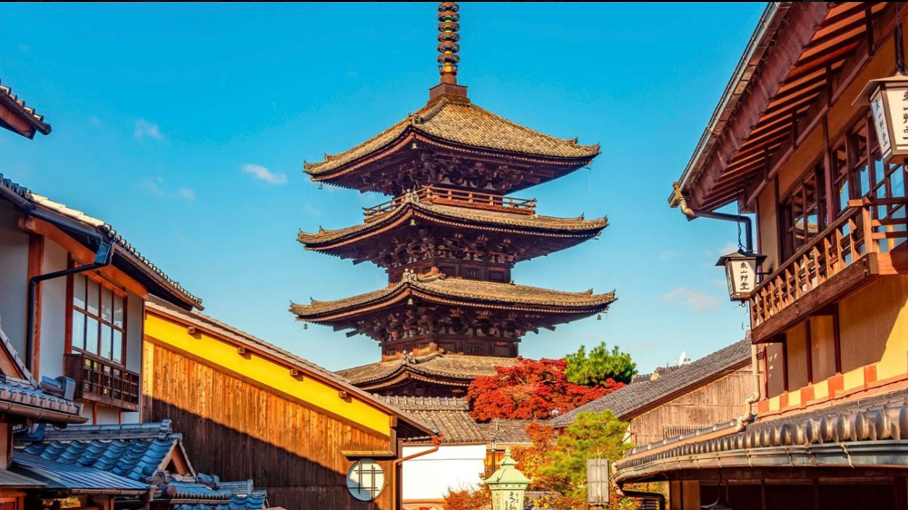
What Makes Kyoto in April So Special?
April is peak cherry blossom season in Japan, and Kyoto is one of the most magical places to experience it. The entire city transforms for a short window of time, where nature takes over historic streets and creates a calm, almost surreal atmosphere.
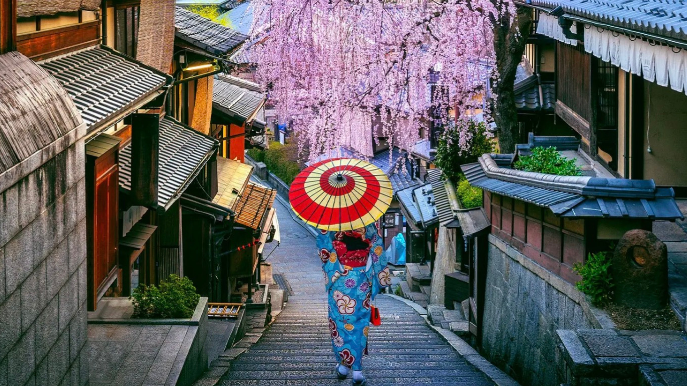
Why Visit Kyoto in April?
- 🌸 Cherry blossoms in full bloom across temples and rivers
- 🏯 Historic temples framed by soft spring scenery
- 🚶♀️ Walkable, peaceful neighborhoods perfect for slow travel
- 📸 Some of the most beautiful seasonal photography in the world
- 🍵 Traditional tea houses and seasonal spring treats
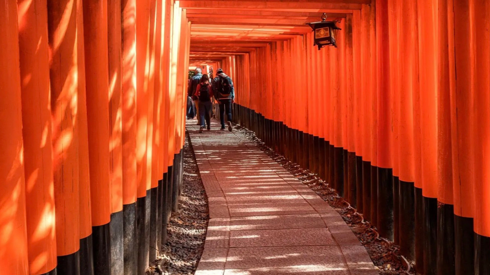
What to Wear in Kyoto in April 🌸
April weather is mild but can shift between warm days and cooler evenings, so light layering is key.
- 🌿 Light trench coat or cardigan
- 👗 Flowy dresses or relaxed pants
- 👟 Comfortable walking shoes (you’ll be exploring a lot)
- 🧣 Light scarf for cooler mornings/evenings
- 🎒 Small crossbody or backpack for day exploring
A 5-Day Cherry Blossom Itinerary in Kyoto 🌸
Day 1: Arrival & Slow Evening Walk
Arrive and settle in. Take a slow evening walk near the river to catch your first glimpse of cherry blossoms under soft sunset light.
Day 2: Temple Hopping & Sakura Views
Visit iconic temples like Kiyomizu-dera and explore surrounding streets lined with blossoms. Spend the day moving slowly and stopping often.
Day 3: Arashiyama Bamboo & River Paths
Walk through the bamboo forest, then explore the nearby river area where cherry blossoms reflect beautifully on the water.
Day 4: Local Culture & Tea Houses
Spend the day in traditional neighborhoods, visit tea houses, and enjoy seasonal matcha and sweets.
Day 5: Final Morning & Reflection
Take a final peaceful walk before departure—no rushing, just soaking in the last quiet moments.
Stay in Central Kyoto Comfort 🏙️
A comfortable and convenient stay in the heart of Kyoto, perfect for exploring the city at your own pace. Located in Central Kyoto, this modern hotel puts you within walking distance of historic landmarks, local markets, and cultural gems—while still offering a calm place to unwind after a full day out.
- 🚇 Easy access to metro stations for getting around the city
- 🏯 Walk to iconic spots like Nijō Castle and Mikane Shrine
- 🛍️ Near Nishiki Market & Shijo Street for food and shopping
- 🎨 Close to Kyoto International Manga Museum
- 🍜 Surrounded by local restaurants just steps from your stay
- 🛏️ Cozy top-floor twin room for a quiet, restful stay
Curious about this stay? Feel free to ask about this trip 💌
The Amalfi Coast in May: Italy’s Dreamiest Coastal Escape 🍋
The Amalfi Coast in May feels like the beginning of summer in the most beautiful way. Pastel seaside villages cling to dramatic cliffs, lemon groves scent the warm air, and sparkling blue water stretches endlessly along the coastline. From slow mornings in Sorrento to scenic drives through Positano and Ravello, every moment feels cinematic and unforgettable.
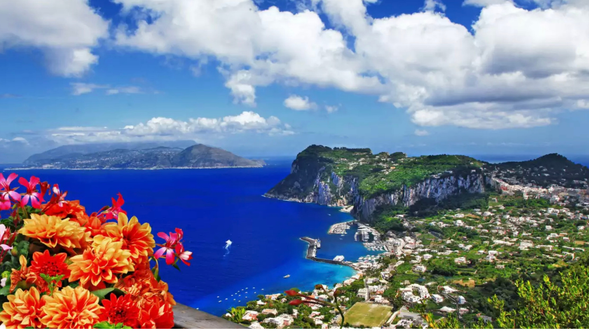
What Makes the Amalfi Coast So Special?
The Amalfi Coast blends breathtaking scenery with slow Italian coastal living. Winding roads lead to colorful villages tucked into the cliffs, while hidden cafés, seaside restaurants, and historic towns create a feeling that’s both luxurious and relaxed. In May, the coast begins to glow with warm sunshine, blooming flowers, and fewer crowds before peak summer arrives.
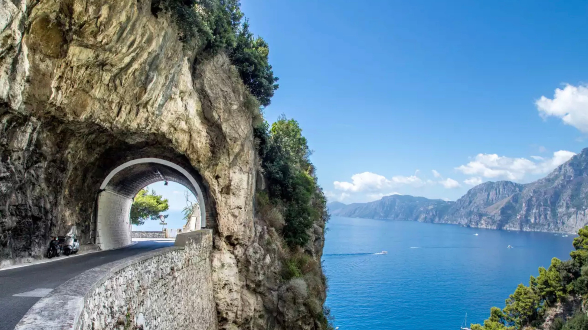
Why Visit the Amalfi Coast in May?
- 🍋 Lemon groves and fresh limoncello along the coastline
- 🌊 Stunning coastal scenery with sparkling blue water
- 🚗 One of the most scenic coastal drives in Europe
- 🏘️ Charming seaside towns like Positano, Ravello, and Amalfi
- ☀️ Warm spring weather before peak summer crowds
- 🍽️ Fresh coastal cuisine and classic Italian favorites
- 📸 Endless dreamy photo spots around every corner
What to Wear on the Amalfi Coast in May 🍋
May brings warm sunny days and cooler evenings along the coast, making light layers and breezy outfits perfect for exploring seaside towns and relaxing near the water.
- 👗 Flowy dresses, linen sets, or relaxed coastal outfits
- 🕶️ Sunglasses and a sunhat for daytime exploring
- 👟 Comfortable sandals or walking shoes for steep streets
- 🧥 Light sweater or cardigan for evening dinners by the sea
- 🎒 Small tote or crossbody bag for day trips and cafés
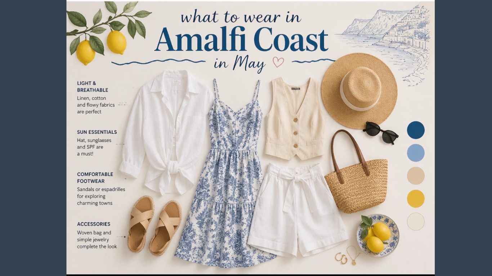
A 5-Day Amalfi Coast Escape 🍋
Day 1: Arrival in Sorrento
Settle into the coastal charm of Sorrento with a slow evening walk, ocean views, and your first taste of authentic Italian cuisine.
Day 2: Positano & Scenic Coastal Drives
Spend the day driving along breathtaking cliffside roads and exploring the colorful streets, boutiques, and beaches of Positano.
Day 3: Capri & The Blue Grotto
Take a dreamy day trip to Capri and experience the famous Blue Grotto, where glowing electric blue water creates a magical atmosphere.
Day 4: Ravello, Amalfi & Hidden Coastal Gems
Explore charming hilltop villages, peaceful gardens, and scenic overlooks while discovering quieter corners of the coastline.
Day 5: Slow Morning & Limoncello Tasting
Enjoy one final slow morning along the coast before experiencing the bright flavors of Sorrento’s famous lemons during a traditional limoncello tasting.
A Cliffside Stay in Sorrento 🍋
Perched above the coastline in Sorrento, this elegant cliffside stay offers panoramic views of the Gulf of Naples, Mount Vesuvius, and the sparkling Mediterranean below. Surrounded by olive groves, lemon trees, and peaceful terraces, it feels tucked away from the crowds while still close to the heart of town.
Spend slow mornings overlooking the sea, relax beside cascading pools built into the hillside, and end your evenings with golden sunsets and coastal Italian cuisine in one of Italy’s dreamiest regions.
- 🌊 Panoramic views of the Gulf of Naples & Mount Vesuvius
- 🏊 Five cascading hillside pools surrounded by greenery
- 🍋 Peaceful setting among olive groves and lemon trees
- 🌅 Spacious terraces perfect for sunset views
- 🍝 Elegant Mediterranean dining inspired by the coast
- 🚶 Easy access to Sorrento and nearby Amalfi Coast towns
Curious about this coastal escape? Feel free to ask about this trip 💌
Ibiza in June: A Mediterranean Island Escape 🌅
Ibiza in June feels like the beginning of summer in its most beautiful form. Crystal-clear waters, golden beaches, charming villages, and unforgettable sunsets create the perfect island escape. While the island is famous for its vibrant nightlife, Ibiza also offers historic landmarks, hidden coves, local markets, and a laid-back Mediterranean lifestyle that makes every day feel like a vacation.

What Makes Ibiza So Special?
Ibiza blends natural beauty, rich history, and island culture into one unforgettable destination. Visitors can spend their mornings wandering historic streets, afternoons relaxing beside turquoise waters, and evenings watching spectacular sunsets over the Mediterranean. Beyond the beaches, Ibiza offers charming villages, UNESCO-protected landmarks, and breathtaking coastal scenery around every corner.

Why Visit Ibiza in June?
- ☀️ Warm Mediterranean weather and long sunny days
- 🌊 Crystal-clear beaches and hidden coastal coves
- 🏰 Explore Dalt Vila, Ibiza's UNESCO World Heritage Old Town
- 🌅 Watch breathtaking sunsets over Es Vedrà
- 🍽️ Enjoy authentic Spanish cuisine, seafood, and paella
- 🛍️ Browse local artisan markets and boutiques
- ✨ Experience the perfect balance of relaxation and adventure

What to Wear in Ibiza in June ☀️
June brings warm sunshine, beach days, and comfortable evenings by the sea. Lightweight clothing and versatile accessories are perfect for exploring beaches, villages, and coastal viewpoints throughout the island.

- 👗 Flowy dresses and breathable linen outfits
- 🕶️ Sunglasses and a sunhat for sunny afternoons
- 👡 Comfortable sandals for beach walks and sightseeing
- 🧥 A light cardigan or layer for cooler evenings
- 👜 Tote bags and crossbody bags for day exploring
A 5-Day Ibiza Summer Escape 🌊
Day 1: Arrival & Island Welcome
Arrive in Ibiza and settle into your island stay. Spend the evening soaking in your first Mediterranean views and enjoying the relaxed atmosphere that makes Ibiza so special.
Day 2: Beach Day & Es Vedrà Views 🌅
Head to some of Ibiza's most beautiful beaches, including Cala d'Hort, Cala Salada, and Cala Vadella. Relax beside crystal-clear waters and take in incredible views of the mysterious island of Es Vedrà just offshore.
Day 3: Explore Dalt Vila 🏰
Spend the day wandering through Ibiza's UNESCO-listed Old Town. Explore cobblestone streets, centuries-old fortifications, charming cafés, and scenic viewpoints overlooking the harbor and coastline.
Day 4: Punta Galera & Coastal Adventures 🌊
Discover Punta Galera, one of Ibiza's most unique coastal landscapes. Relax beside natural rock formations, swim in turquoise waters, or choose an optional boat excursion to explore hidden coves and sea caves.
Day 5: Relaxation & Ibiza Nights ✨
Enjoy a leisurely final day before experiencing Ibiza after sunset. Whether you choose a waterfront dinner, live music, cozy wine bar, or the island's famous nightlife, spend your last evening making unforgettable memories.

A Relaxing Mediterranean Island Stay 🌴
Spend five nights enjoying the beauty of Ibiza while surrounded by sunshine, coastal views, and the relaxed rhythm of island life. Wake up each morning ready to explore beaches, historic landmarks, and hidden corners of one of Spain's most beloved destinations.
- ✈️ Round-trip airfare included
- 🚐 Round-trip airport transfers included
- 🌴 Five nights in beautiful Ibiza
- 🍳 Breakfast included daily
- 🌊 Close to beaches and coastal attractions
- 🌅 Easy access to famous sunset viewpoints
Curious about this island escape? Feel free to ask about this trip 💌
Thinking About a Trip Like This?
If crystal-clear waters, Mediterranean sunsets, charming villages, and laid-back island adventures sound like your kind of getaway, I'd love to help you start planning.
Ask About This Trip 💌Discover Lisbon in July ☀️
Colorful streets, historic trams, breathtaking viewpoints, and waterfront charm make Lisbon one of Europe's most unforgettable cities. July brings warm sunshine, lively plazas, outdoor cafés, and long evenings perfect for wandering through centuries of history. Whether you're exploring ancient neighborhoods, tasting fresh pastries, or watching the sunset over the Tagus River, Lisbon offers the perfect blend of culture, cuisine, and relaxation.
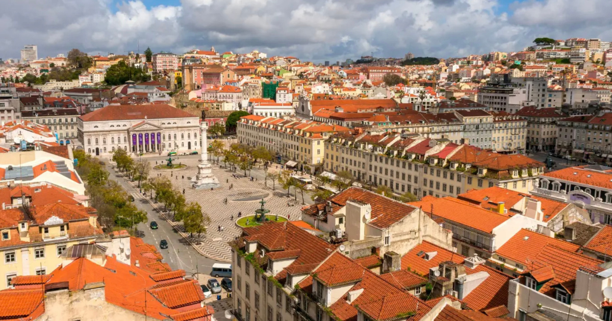
What Makes Lisbon So Special?
Built across seven scenic hills, Lisbon is a city where every winding street leads to a breathtaking viewpoint, colorful tiled buildings, or a hidden café. Historic yellow trams climb steep neighborhoods while grand plazas open toward the Tagus River. From centuries-old castles and UNESCO World Heritage Sites to lively markets and traditional Fado music, Lisbon effortlessly blends old-world charm with modern city life.
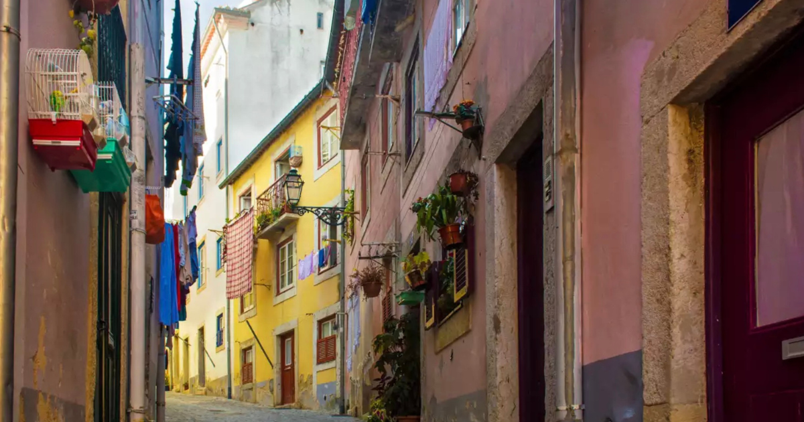
Why Visit Lisbon in July? ☀️
July is one of the best times to experience Lisbon's vibrant energy. Long sunny days, warm evenings, outdoor cafés, and colorful neighborhoods make the city come alive. From historic landmarks and scenic viewpoints to waterfront strolls and unforgettable flavors, Lisbon offers the perfect balance of adventure, culture, and relaxed European summer charm.
- ☀️ Enjoy warm, sunny weather perfect for exploring Lisbon's hills, viewpoints, and colorful streets on foot
- 🚋 Ride the famous Tram 28 through historic neighborhoods like Alfama, passing charming alleyways and iconic city views
- 🏰 Step into Portugal's history by visiting Belém Tower and Jerónimos Monastery, two incredible landmarks showcasing Lisbon's Age of Discovery
- 📸 Explore Lisbon's beautiful plazas like Rossio Square and Praça do Comércio, where architecture, cafés, and local life meet
- 🍮 Taste authentic Portuguese flavors with a freshly baked pastel de nata from a local bakery
- 🎶 Experience traditional Fado music in Alfama, where soulful melodies fill the historic streets in the evenings
- 🌅 Watch unforgettable sunsets from Lisbon's famous miradouros (viewpoints) overlooking the Tagus River and the city's red rooftops

Lisbon Style Guide 👒✨
Lisbon in July calls for effortless European summer style. Expect warm sunshine, colorful streets, cobblestone hills, and plenty of walking, so choose breathable fabrics, comfortable shoes, and versatile pieces that can take you from daytime exploring to sunset dinners along the Tagus River.
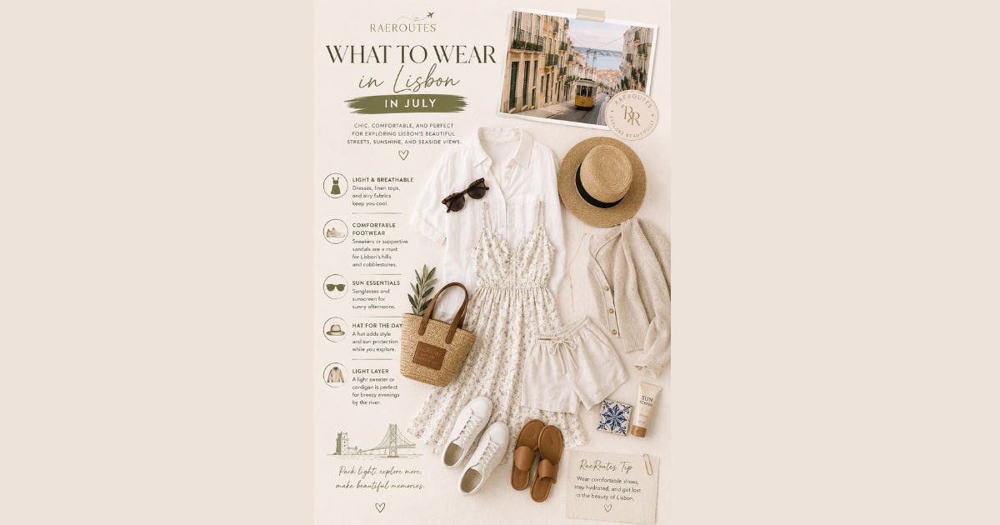
Lisbon Style Guide 👒✨
Lisbon in July calls for effortless European summer style. Expect warm sunshine, colorful streets, cobblestone hills, and plenty of walking, so choose breathable fabrics, comfortable shoes, and versatile pieces that can take you from daytime exploring to sunset dinners along the Tagus River.

- 🤍 Flowy linen dresses, maxi dresses, or matching linen sets
- 👚 Breezy blouses paired with tailored shorts or midi skirts
- 👖 Lightweight trousers or wide-leg pants for a chic European look
- 👟 White sneakers, leather sandals, or comfortable walking flats
- 🧥 Lightweight cardigan or linen button-down for cooler evenings
- ✨ Gold jewelry and simple layers for an effortless Mediterranean style
- 🤍 Linen button-down shirts or breathable cotton polos
- 👕 Relaxed tees paired with tailored shorts for exploring the city
- 👖 Lightweight chinos, linen pants, or neutral trousers
- 👟 Clean white sneakers, leather sandals, or loafers
- 🧥 Lightweight overshirts or linen layers for evening walks
- ⌚ Minimal watches and classic accessories for a polished vacation look
- 👜 Woven tote, crossbody bag, or small day bag
- 🕶️ Sunglasses for sunny viewpoints and waterfront walks
- 👒 Wide-brim sun hat, baseball cap, or linen hat
- ☀️ Sunscreen & SPF lip balm
- 💧 Reusable water bottle
- 🔋 Portable charger for long sightseeing days
- 📸 Camera or phone storage for capturing Lisbon's colorful streets
- 🌬️ Mini handheld fan for warm afternoons
- 🩹 Blister patches for Lisbon's famous hills and cobblestone streets
🎨 RaeRoutes Style Palette
Think linen white, cream, sandy beige, olive green, terracotta, navy, and ocean blue for a timeless Mediterranean-inspired wardrobe that feels perfectly at home wandering Lisbon's streets, exploring Sintra's palaces, or enjoying a sunset dinner overlooking the city.
A 5-Day Lisbon Adventure 🇵🇹
Day 1: Welcome to Lisbon ✈️
Arrive in Portugal's colorful capital and spend your first evening soaking in the city's laid-back atmosphere. Wander nearby streets, admire the beautiful architecture, and enjoy your first authentic Portuguese dinner. Be sure to try bacalhau, Portugal's famous salted cod, followed by a warm, flaky pastel de nata for dessert.
Day 2: Lisbon's Historic Icons 🏰
Explore Lisbon's rich history as you visit the magnificent Jerónimos Monastery and the iconic Belém Tower. Wear comfortable walking shoes and lightweight layers as you explore colorful azulejo tiles, scenic overlooks, and fascinating landmarks.
Day 3: Ride Tram 28 & Explore Alfama 🚋
Hop aboard the legendary Tram 28 as it winds through some of Lisbon's most beloved neighborhoods. Afterwards, wander the cobblestone streets of Alfama, where hidden cafés, local shops, charming alleyways, and traditional Fado music create one of the city's most authentic experiences.
Day 4: Belém & Waterfront Strolls 🌊
Spend the day exploring the beautiful waterfront district of Belém. Visit the Discoveries Monument, stroll along the Tagus River, admire lush gardens, and enjoy another freshly baked pastel de nata while taking in scenic riverside views.
Day 5: Fairytale Sintra & Lisbon Views 🌄
Take a short train ride to magical Sintra, where colorful palaces, lush gardens, and storybook streets await. Visit the breathtaking Pena Palace before returning to Lisbon for one last ride on the Santa Justa Lift and panoramic city views.
RaeRoutes Must-Sees in Lisbon ✨
- 🚋 Ride the iconic Tram 28
- 🏰 Explore Belém Tower
- ⛪ Visit Jerónimos Monastery
- 🏛️ Wander Praça do Comércio
- ⛲ Explore Rossio Square
- 🕍 Visit the Carmo Ruins
- 🎨 Admire Portugal's famous tile art
- 🍮 Enjoy a fresh pastel de nata
- 🎶 Listen to live Fado music in Alfama
- 🌅 Catch sunset from Lisbon's scenic viewpoints
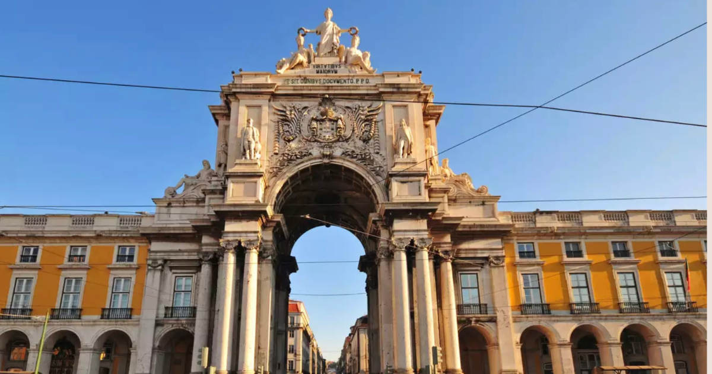
Ready to Experience Lisbon?
From iconic yellow trams and breathtaking viewpoints to incredible Portuguese cuisine and charming cobblestone streets, Lisbon is a city that captures your heart from the moment you arrive. If Portugal has been calling your name, I'd love to help you start planning your own unforgettable adventure.
Plan My Portugal Adventure 💌